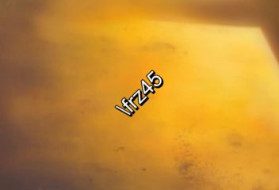
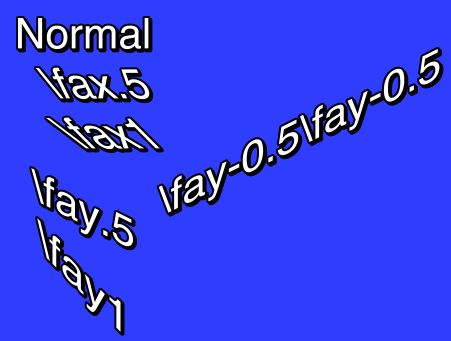
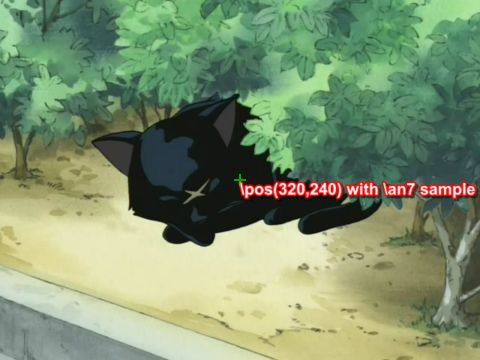
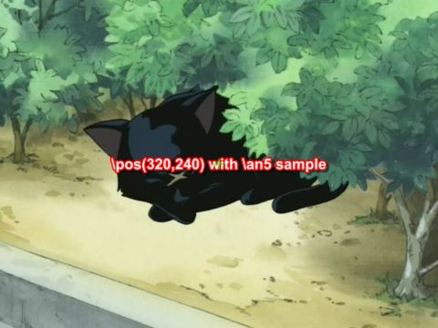
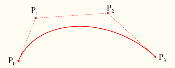

The following is a list of every tag supported by the Advanced Substation Alpha format. This is basically a detailed version of ass-quickref.txt. See the tutorial for an introduction to typesetting, using some basic tags.
The following tags are written in the middle of the text, and not inside override blocks (i.e. not between { and }).
\n
In all other wrapping modes, this is replaced by a regular space. This is rarely (if ever) actually useful. If you're not sure whether you want this or \N, you probably want \N.
\N
\h
Override tags must appear within override blocks, which begin with { and end with }. Any unrecognized text within override blocks is silently ignored, so they are also commonly used for inline comments. Mixing comments and override tags in the same override block is not recommended.
Tags fall into two general categories: those which set a property of the line
itself, and those which modifiy only the text following them. \pos, \move,
\clip, \iclip, \org, \fade and \fad are those in the first category;
all others are in the second. Tags in the first category should appear at most
once in a line, and where in the line they appear is unimportant. In addition,
some of them are mutally exclusive: \pos and \move; \clip and \iclip;
\fad and \fade. The result of inluding multiple instances of these tags or
mutally exclusive tags will vary between renderers and is not recommended.
Tags in the second category modify all text after the tag until the end of the line or until the property is re-overridden by another tag.
Override tags always follow the same form: They start with a backslash \ character, then a name, and after the name the parameter to the tag. If the parameter is omitted, the default value from the line's style is used.
Some tags are "complex" and take more than one parameter. In these cases, parameters are put inside parentheses with commas between the parameters.
Note on typography:
On this page, everything written in italics with < angle brackets >
around it is a parameter and you must enter a value instead of it. The angle
brackets are not part of the value you should enter. Use the examples as a
guide to how the tags should be entered. In general, the same rules apply to
all tags in how they look.
\i1
\i0
\i1 to enable italics for the following
text and \i0 to disable italics again.
\b1
\b0
\b<weight>
Switch boldface text on or off. Use \b1 to enable boldface for the
following text and \b0 to disable boldface again.
The \b<weight> form allows you to specify an
explicit weight to use. Note that most fonts only support one or two weights
so you rarely need to use this. Font weights are multiples of 100, such that
100 is the lowest, 400 is "normal", 700 is "bold" and 900 is the heaviest.
I am {\b1}not[\b0} amused.
The word “not” is written in boldface.
{\b100}How {\b300}bold {\b500}can {\b700}you {\b900}get?
The words are written with increasingly greater weight. Note that most fonts do not have more than one or two different weights and you will only be able to see “not bold” and “bold” in that case.
\u1
\u0
\u1 to enable underlining for
the following text and \u0 to disable underlining again.
\s1
\s0
\s1 to enable strikeout for
the following text and \s0 to disable strikeout again.
\bord<size>
If "scale border and shadow" (see script properties) is enabled, the value is given in script resolution pixels, otherwise it is given in video resolution pixels (which means the border thickness will vary depending on the resolution of the video on which the subtitles are rendered.)
The value is not limited to whole integer pixels and can have decimal places. Border width cannot be negative.
\bord0
Disable border entirely.
bord3.7
Set the border width to 3.7 pixels
\xbord<size>
\ybord<size>
Use the \xbord \ybord tags to set the border size in X and Y direction
separately. This can be useful for correcting the border size for anamorphic
rendering of subtitles.
Note that if you use \bord after \xbord or \ybord on a line, it will
override both of them.
You can set the border width to 0 (zero) in one of the directions to entirely disable border in that direction.
\shad<depth>
The shadow distance can not be negative with this tag.
\xshad<depth>
\yshad<depth>
Set the distance from the text to position the shadow at, with X and Y position set separately. Shadow is only disabled if both X and Y distance is 0.
Note that unlike \shad, you can set the distance negative with these tags to position the shadow to the top or left of the text.
\be0
\be1
\be<strength>
Enable or disable a subtle softening-effect for the edges of the text. The effect isn't always very visible, but it can in some cases make the text look better. It is usually more visible at smaller text sizes.
Be aware that this tag blurs the edges of the text, not everything. This means that if the text has a border (set with \bord) the border will be blurred, but if there is no border, the main text will be blurred instead.
In the extended version, strength is the number of times to apply the
regular effect. Note that at high values the effect de-generates into
nothingness, and generally isn't very useful. For strong blurs, \blur is
generally more useful as a result. The strength must be an integer number.
\blur<strength>
\be, the strength can be non-integer here. Set strength to 0 (zero) to
disable the effect. Be careful, setting strength too high can take a lot of
CPU time to render.
Be aware that this tag blurs the edges of the text, not everything. This means that if the text has a border (set with `\bord`) the border will be blurred, but if there is no border, the main text will be blurred instead.
\fn<name>
\fn and the font name, and you should not put parentheses or similar
around the font name either.
\fnArial
The text following this tag will be in Arial font.
\fnTimes New Roman
The text following this tag will be in Times New Roman font.
\fs<size>
You can only specify integer font sizes.
\fs10
The following text will use a size 10 font.
\fscx<scale>
\fscy<scale>
Adjust the size of the text in X (\fscx or Y (\fscy) direction. The
scale given is in percent, so 100 means "original size".
This is not the same as setting the font size, as setting the size is subject
to font hinting while scaling the
text modifies the text shape after hinting. As a result, this should always be
used with \t rather than \fs, as animating changing font hinting is very
rarely desirable.
These tags also affect vector drawings.
You can use font scaling to correct for anamorphic rendering and to specify text size more precisely than with \fs.
Note that older versions of VSFitler will truncate non-integer scales.
\fscx150
Make the text 50% wider than normal.
\fscy50
Make the text half height.
\fscx200\fscy200
Make the text double size.
\fsp<spacing>
Spacing can be negative and can have decimals.
\frx<amount>
\fry<amount>
\frz<amount>
\fr<amount>
Rotates the text along the X, Y or Z axis. The \fr tag is a shortcut for \frz.
The rotation amount is given in mathematical degrees, such that 360 degrees is a full rotation, and rotating any multiple of 360 is the same as not rotating. It is legal to specify negative rotation amounts, as well as amounts larger than 360 degrees.
The rotation is performed around the subtitle line origin point, this is described with the \org tag.
These tags also affect vector drawings.
\frx45
Rotate the text 45 degrees on the X axis.
\fry-45
Rotate the text 45 degrees in opposite direction on the Y axis.
\frz180
Rotate the text 180 degrees on the Z axis, making it upside-down.
The following two rotations produce the same result:
\frz-30 \frz330
This is because 330 degrees is 30 degrees less than a full rotation of 360 degrees.
\t(\frz3600)
Perform an animation where the text performs 10 full revolutions on the Z axis. Also see the \t tag.
The following screenshots illustrate the effect of rotating on the different axes:



\fax<factor>
\fay<factor>
Perform a shearing (perspective distortion) transformation of the text. A factor of 0 (zero) means no distortion.
Usually factor will be a small number; values outside the range -2 to 2 are unlikely to have desireable results.
Shearing is performed after rotation, on the rotated coordinates. The coordinate system used for shearing is not affected by the rotation origin.

\fe<id>
Some common font encoding IDs are:
Is that really correct?
A more complete list can be seen the style editor dialog box.
In ASS files stored in non-Unicode encodings, this tag also affects what codepage the text following it should be interpreted in. Aegisub doesn't support this use and some renderers might not support it either. It is recommended you do not rely on this and instead always store your files in a Unicode encoding. (Aegisub stores files in Unicode UTF-8 by default.)
\c&H<bb><gg><rr>&
\1c&H<bb><gg><rr>&
\2c&H<bb><gg><rr>&
\3c&H<bb><gg><rr>&
\4c&H<bb><gg><rr>&
Set the color of the following text. The \c tag is an abbreviation of \1c.
\1c sets the primary fill color.\2c sets the secondary fill color. This is only used for pre-highlight in
standard karaoke.\3c sets the border color.\4c sets the shadow color.The color codes are given in
hexadecimal in Blue Green Red
order. Note that this is the opposite order of HTML color codes. Color codes
must always start with &H and end with &.
The Pick Color toolbar buttons can assist in picking colors and entering the color codes.
\alpha&H<aa>
\1a&H<aa>
\2a&H<aa>
\3a&H<aa>
\4a&H<aa>
Set the alpha (transparency) of the text.
\alpha sets the alpha of all components at once.\1a sets the primary fill alpha.\2a sets the secondary fill alpha. This is only used for pre-highlight in
standard karaoke.\3a sets the border alpha.\4a sets the shadow alpha.An alpha of 00 (zero) means opaque/fully visible, and an alpha of FF (ie. 255 in decimal) is fully transparent/invisible.
\alpha&H80&
Set the alpha of all components to hexadecimal 80, decimal 128, making the text 50% transparent in general.
\1a&HFF&
Set the primary fill alpha to hexadecimal FF, decimal 255, making it invisible and effectively leaving only the border and shadow.
\an<pos>
The \an tag uses "numpad" values for the pos, ie. the alignment values
correspond to the positions of the digits on the numeric keypad on a regular
keyboard:
\a<pos>
\an in new scripts instead, as it is more intuitive.
The exception is that \a6 should be used for lazy sign translating, because
if you're going to be lazy you should do it right and save the extra character.
Calculate pos as follows: Use 1 for left-alignment, 2 for center alignment and 3 for right-alignment. If you want sub-titles you're done. To get top-titles, add 4 to the number, to get mid-titles add 8 to the number:
\k<duration>
\K<duration>
\kf<duration>
\ko<duration>
Please note that these tags alone only create some very specific effects and all other effects are created with a combination of multiple different tags.
The \k family of tags mark up subtitles for karaoke effects by specifying
the duration of each syllable. You place a \k tag before each syllable in
the line.
The duration is given in centiseconds, ie. a duration of 100 is equivalent
to 1 second. You generally don't enter \k tags manually but rather use
karaoke timing tools such as Aegisub's karaoke
mode.
The different \k tags create various effects:
\k: Before highlight, the syllable is filled with the secondary color and
alpha. When the syllable starts, the fill is instantly changed to use
primary color and alpha.\K and \kf: These two are identical. Note that \K is an uppercase K
and is different from lowercase \k. The syllable fill starts out secondary
color, when the syllable starts, the fill changes from secondary to primary
with a sweep from left to right, so the sweep ends when the syllable time is
over.\ko: Similar to \k, except that before highlight, the border/outline of
the syllable is removed, and appears instantly when the syllable starts.Note: There is an additional karaoke tag, \kt, which is very different from
the other ones. It is rarely useful and Aegisub does not support that tag, so
it is not documented.
\q<style>
\N forces line breaks.\N forces line breaks.\n and \N force line breaks.\r
\r<style>
The first form that does not specify a style will reset to the style defined for the entire line, while the second form, that specifies the name of a style, will reset the style to that specific style.
-Hey\N{\rAlternate}-Huh?\N{\r}-Who are you?
Assuming the current line style is “Default”, this has first “Hey” in the Default style, then follows on next line “Huh?” in the style “Alternate”, and on the third line the style is reset to “Default” for the “Who are you?” text.
\pos(<X>,<Y>)
The alignment of the subtitle line is used as anchor point for the position.
I.e. when you have a line with alignment top-left, the top-left corner of the
subtitle is placed at the coordinates given to \pos, and for bottom-center
alignment, the bottom center of the subtitle is placed at the coordinates
given.
The following screenshots illustrate the way alignment affects positioning. The green cross marks the point (320,240) on the video.


\move(<x1>,<y1>,<x2>,<y2>)
\move(<x1>,<y1>,<x2>,<y2>,<t1>,<t2>)
The \move tag works similar to `\pos` in that it
positions the subtitle line, the difference is that \move makes the subtitle
move.
The two versions of \move differ in that one makes the movement occur over
the entire duration of the subtitle, while on the other you specify the time
over which the movement occurs.
The coordinates x1, y1, x2 and y2 are given in the script resolution
coordinate system, like \pos. The subtitle starts out at point (x1,y1)
and moves with constant speed so it ends up at (x2,y2).
Alignment influences movement coordinates the same
way as it influences \pos coordinates.
In the second version, the times t1 and t2 are given in milliseconds, ie. one thousandth of a second, and are relative to the start time of the subtitle. For example, a t1 value of 1500 means that the movement begins 1.5 seconds (one and a half second) after the line has appeared on screen. When you specify times for the movement, the position of the subtitle is as follows:
Note that it is legal to have t1 and t2 specify times greater than the
duration of the line, but it might not be very useful to do so. Specifying
both t1 and t2 as 0 (zero) is the same as using the first version of
\move, ie. the movement will occur from the start time of the line to the
end time of the line.
There are some things \move can not do:
\pos and a \move tag in a line will not work. It will also not work to
put two or more \move tags in a single line.If you need to do do any of those two you will need to split the movement into segments that are done on separate subtitle lines. (How to do this is outside the scope of this page.)
\move(100,150,300,350)
When the line appears on screen, the subtitle is at (100,150). While the subtitle is displayed, it moves at constant speed such that it will arrive at point (300,350) at the same time it disappears.
\move(100,150,300,350,500,1500)
The line appears at (100,150). After the line has been displayed for half a second (500 milliseconds) it begins moving towards (300,350) such that it will arrive at the point a second and a half (1500 milliseconds) after the line first appeared on screen.
\org(<X>,<Y>)
When there is no \org tag in a line, the rotation origin is implicitly the
same as the position anchor point. This means that
the rotation origin will move if the line moves and there is no origin set
with \org. Note that you can not animate the \org tag, you are limited
to a fixed origin if you use it.
If the rotation origin is placed on the vanishing point in a 3D scene, 3D rotations of subtitle line will produce the correct perspective to match the scene.
It's perfectly possible (and occasionally useful) to place the origin point far outside the actual image; if it is sufficiently far away, doing appropriately calculated small rotations will seem to move the text along a straight (or almost straight) line through the image. This is somewhat hard to control, but can be used to work around format limitations with \move, such as the inability to do accelerated moves or several moves per line.
There can be at most one \org tag in a single line, if you put more than one
in a single line, only the first is used.
\org(320,240)
Fix the rotation origin at point (320,240).
\org(10000,0)
Placing the rotation origin at a far away point allows you to use slight
\frz rotations to produce “jumping” effects; the text will move up or down
without seeming to rotate.
\fad(<fadein>,<fadeout>)
Adding a fade effect does not extend the duration of the line, rather the start or end of the line's display time is used for the fade effect. For this reason, you should be careful that fadein+fadeout is not greater than the duration of the line. For example, for a line displayed for 4 seconds, the sum of fadein+fadeout should not be greater than 4000.
\fad(1200,250)
Fade in the line in the first 1.2 seconds it is to be displayed, and fade it out for the last one quarter second it is displayed.
\fade(<a1>,<a2>,<a3>,<t1>,<t2>,<t3>,<t4>)
The alpha values are given in decimal and are between 0 and 255, with 0
being fully visible and 255 being invisible. The time values are given in
milliseconds after the start of the line. All seven parameters are required.
(For most common fade effects the [[\fad|ASS_Tags#fade]] tag works fine.)
\fade(255,32,224,0,500,2000,2200)
Starts invisible, fades to almost totally opaque, then fades to almost totally invisible. First fade starts when the line starts and lasts 500 milliseconds. Second fade starts 1500 milliseconds later, and lasts 200 milliseconds.
\t(<style modifiers>)
\t(<accel>,<style modifiers>)
\t(<t1>,<t2>,<style modifiers>)
\t(<t1>,<t2>,<accel>,<style modifiers>)
Perform a gradual, animated transformation from one style to another. The
style modifiers are other override tags as specified in this reference. Only
a limited set of the override tags are animateable with \t:
| Font | Geometry | Other effects |
|---|---|---|
| \fs | \fscx | \bord |
| \fsp | \fscy | \xbord |
| \c | \frx | \ybord |
| \1c | \fry | \shad |
| \2c | \frz | \xshad |
| \3c | \fr | \yshad |
| \4c | \fax | \clip |
| \alpha | \fay | \iclip |
| \1a | \be | |
| \2a | \blur | |
| \3a | ||
| \4a |
Note: For \clip and \iclip, only the rectangle versions can be animated. The
vector drawing versions cannot be animated.
Note: Mixing \clip and \iclip in \t tags has undesireable results.
The t1 and t2 parameters specify the time interval to perform the
transformation over. In the versions without t1 and t2 the transformation
is performed over the entire duration of the line. The times are given in
milliseconds and are relative to the start time of the line. (For the rest of
the description of \t, t1 and t2 are assumed to be specified, or
implicitly be respectively 0 and the duration of the line.)
The accel parameter can be used to make the animation non-linear and instead follow an exponential curve. An accel parameter of 1 (one) causes the animation speed to be linear. A value bewteen 0 and 1 causes the animation to start fast and end slow. A value greater than 1 causes the animation to start slow and end fast. (For the mathematically inclined, the function is y = x with x ∈ [0;1] = (t-t1)/(t2-t1), t being the current time.)
Before t1, the style is as all tags before the \t tag specify. After t2
the style is as all tags before the \t tag, and further overridden by the
given style overrides. Between t1 and t2 the style is gradually animated
between those two points, following the acceleration function described above.
{\1c&HFF0000&\t(\1c&H0000FF&)}Hello!
The text starts out blue, but fades towards red so it is completely red when the line ends.
{\an5\t(0,5000,\frz3600)}Wheee
Makes the text rotate 10 times, counterclockwise, lasting for 5 seconds.
{\an5\t(0,5000,0.5,\frz3600)}Wheee
Same as above, but it will start fast and slow down, still doing the 10 rotations in 5 seconds.
{\an5\fscx0\fscy0\t(0,500,\fscx100\fscy100)}Boo!
Text starts at zero size, i.e. invisible, then grows to 100% size in both X and Y direction.
\clip(<x1>,<y1>,<x2>,<y2>)
\iclip(<x1>,<y1>,<x2>,<y2>)
Define a rectangle to clip the line, only the part of the line that is inside
the rectangle is visible. The \iclip tag has the opposite effect, it defines
a rectangle where the line is not shown.
The x1, y1, x2 and y2 coordinates are given in script resolution pixels and are relative to the top-left corner of the video. The coordinates must be integers, there is no possibility to use non-integer coordinates. (Increasing the script resolution will not increase the precision, the clipping always happens on video pixel boundaries.)
\clip(0,0,320,240)
Assuming 640x480 script resolution, only the part of the line within the top left quadrant is visible.
\iclip(0,0,320,240)
Similar to above, but instead the part of the line within the top left quadrant is hidden.
Example of \clip(0,0,704,245) on a 704x480 video:
\clip(<drawing commands>)
\clip(<scale>,<drawing commands>)
\iclip(<drawing commands>)
\iclip(<scale>,<drawing commands>)
Use the shape defined by a vector drawing to selectively display (\clip) or
hide (\iclip) parts of the line.
The drawing commands are drawing commands as those used with the \p tag,
the coordinates are given in script resolution pixels and are relative to the
top left corner of the video.
If the scale is not specified it is assumed to be 1 (one), meaning that
coordinates correspond directly to pixels. The scale works the same way as
the scale for \p drawings.
Unlike the rectangular clip, the vector drawing clip can not be animated
with \t. If you need to animate a vector drawing clip, you must create
multiple similar subtitle lines with each their own "frame" of the clipping
animation.
\clip(1,m 50 0 b 100 0 100 100 50 100 b 0 100 0 0 50 0)
Only show the portion of the line within the defined pseudo-circle.
Advanced Substation Alpha also supports some advanced drawing tags that allow you to draw with vectorial graphics. Certain familiarity with vectors and splines will make the understanding of this much simpler.
Setting this tag to 1 or above enables drawing mode. Text after this override block will then be interpreted as drawing instructions, and not as actually visible text. Setting this to zero disables drawing mode, restoring normal behavior. When turning on, the value might be any integer larger than zero, and will be interpreted as the scale, in 2^(value-1) mode. This is done to allow sub-pixel accuracy. e.g.:
\p1
(Enables drawing with normal coordinates)
\p0
(Disables drawing)
\p2
(Enables drawing, and resolution is doubled. So drawing to 200,200 will actually draw to 100,100)
\p4
(Enables drawing, and resolution is 8x larger (2^(4-1)). So drawing to 400,400 will actually draw to 50,50)
Defines baseline offset for drawing. This is basically an Y offset to all coordinates. e.g.:
\pbo-50
(Draws everything 50 pixels above specified)
\pbo100
(Draws everything 100 pixels below specified)
These commands should appear either in a \clip tag (vectorial overload) or between \p# and \p0, outside override blocks. For example (taken straight from the ASS specs):
Square:
{\p1}m 0 0 l 100 0 100 100 0 100{\p0}
Rounded square:
{\p1}m 0 0 s 100 0 100 100 0 100 c{\p0}
(c equals to "p 0 0 100 0 100 100" in this case)
Circle (almost):
{\p1}m 50 0 b 100 0 100 100 50 100 b 0 100 0 0 50 0{\p0}
(note that the 2nd 'b' is optional here)
Drawing commands use the primary color for fill and outline color for borders. They also display shadow. The idea of drawing vectors is that there is an invisible "cursor" (think of it as the mouse pointer in a drawing program, or as a pen moving through the image) on the video frame, and you tell it to move to other positions. As it moves, it draws on the area behind it, and when you close the line formed, it fills it with the primary color.
Moves the cursor to x,y. If you have an unclosed shape, it will automatically be closed, as the program assumes that you are now drawing a new, independent shape. All drawing routines must start with this command.
Moves the cursor to x,y, without closing the current shape.
Draws a line from the current cursor position to x,y, and moves the cursor there afterwards.
Draws a cubic (3rd degree) Bézier curve from the cursor position to (x3,y3),
using (x1,y1) and (x2,y2) as the control points. Check the article on
Wikipedia for more
information about Bézier curves. In this picture taken from that article, P0
is the cursor position, P1 is x1,y1, P2 is x2,y2 and P3 is x3,y3:

Note that the curve begins at P0, heads towards P1, then arrives at P3 coming
from P2's direction.
Draws a cubic (3rd degree) uniform b-spline to point N. This must contain at least 3 coordinates (and is, in that case, the same as b). This basically lets you chain several cubic Bézier curves together. Check this other article on Wikipedia for more information.
Extends the b-spline to x,y. This is essentially the same as adding another pair of coordinates at the end of s.
Closes the b-spline.
Note: The vector clip visual typesetting tool only supports the m, l and b commands, and may corrupt drawings which use the other commands.